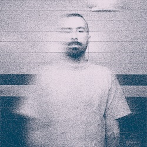

About Nico
Nico Stuart is an Atlanta-based multi-disciplinary artist. Enamored with all things mystical, metaphysical, nostalgic, and erotic, his work aims to highlight the ever-present saudade of modern relationships and the magic that exists between people. Through his poems, stories, music and miniatures, he works toward opening his audience's eyes to the magic of the human realm.
>> Listen to his latest music releases on Soundcloud
>> Explore his latest miniature creations on Instagram
For all inquiries, please use the contact form linked above.